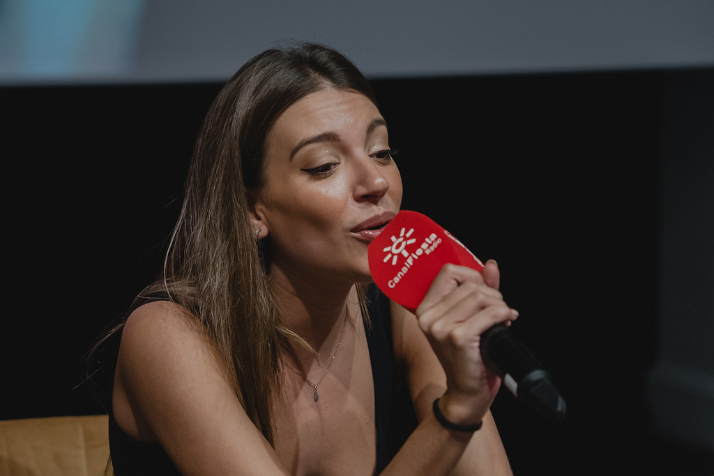
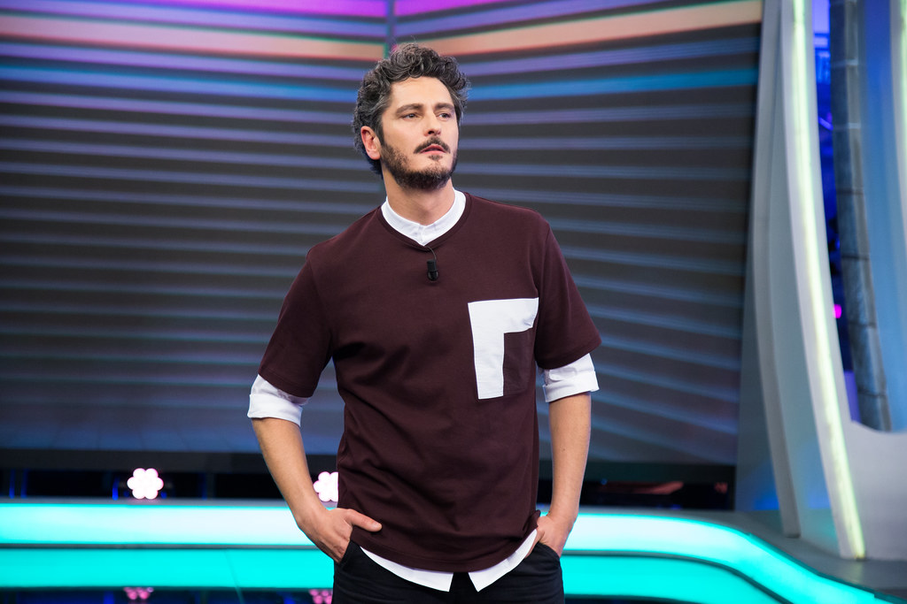

Helmuga Popularrak
Europa xarmagarria: Europako historia aberatsa eta arkitektura liluragarria aztertzen ditu. Veneziako kanal erromantikoetatik Atenasko hondakin zaharretaraino, gure bidaia-paketeek
kontinenteko lekurik enblematikoenak ezagutzera eramango zaituzte. Ez galdu bertako gastronomia goxoa dastatzeko eta hiri bakoitzeko kultura bizietan murgiltzeko aukera.
Abentura Asian: Murgildu Asiak eskaintzeko duen aniztasunean eta mirarian. Bisitatu Kyotoko tenplu sakratuak, erlaxatu Baliko hondartzetan, edo ausartu Bangkokeko kale zalapartatsuetara.
Gure paketeekin, tradizioaren eta modernitatearen onena esperimentatu ahal izango duzu bidaia bakar batean.
Amerikako Edertasun Naturalak: Estatu Batuetako parke nazional handietatik Costa Ricako oihan dardaratsuetaraino, Amerikak paisaia eta esperientzia aukera paregabea eskaintzen du.
Aire zabaleko abentura bat edo ihesaldi lasaigarri bat nahiago baduzu, helmuga perfektua dugu zuretzat.
Zerbitzuak
Hegaldien erreserbak:
Tarifa lehiakorrak eskaintzen ditugu mundu mailako hegaldietan. Gure taldeak aukerarik onenak aurkitzen ditu zure bidaiak ahalik eta erosoenak eta
ekonomikoenak izan daitezen.
Ostatua:
Hotelen eta konfiantzazko ostatuen sare batekin lan egiten dugu, zure egonaldia atsegina izan dadin. Luxuzko hoteletatik hasi eta bed and breakfasts abegitsuetaraino,
gustu eta aurrekontu guztietarako aukerak ditugu.
Tours eta Jarduerak:
Ezagutu eta erreserbatu tour eta jarduera zirraragarriak zure helmugan. Aukera ugari eskaintzen ditugu, hala nola bisita gidatuak leku historikoetara,
abentura jarduerak, hala nola urpekaritza eta mendi-ibiliak.
Aholkularitza pertsonalizatua:
Bidaietako gure aditu taldea prest dago zure bidaiaren xehetasun bakoitza planifikatzen laguntzeko. Ibilbideen gomendioak edo maletak egiteko
aholkuak behar badituzu ere, hemen gaude zure bidaia-esperientzia ahaztezina dela ziurtatzeko.
Iritziak
Ana G. "BilboBidaiakekin izan genuen esperientzia ahaztezina izan zen. Plangintzatik exekuziora, dena perfektua izan zen. Langileak oso adi egon ziren eta gure eztei-bidaiarako helmuga perfektua aukeratzen lagundu ziguten. Zalantzarik gabe, haiekin bidaiatuko dugu berriro!"
Javier M. "Ez genuen inoiz negozio-bidaia hain ongi antolaturik izan. BilboBidaiaki esker, xehetasun bakoitza bete egin zen, eta gure bileretan kontzentratu ahal izan ginen, kezkarik gabe. Profesionaltasuna eta xehetasunezko arreta apartak izan ziren."
Iñaki W. "Izan ditugun familia oporrik dibertigarrienak. Haurrentzako jardueretatik hasi eta helduentzako txangoetaraino, BilboBidaiak-ek dena pentsatu zuen. Une oro zainduta sentitzen gara, eta segundo oro gozatzen dugu gure bidaiaz."